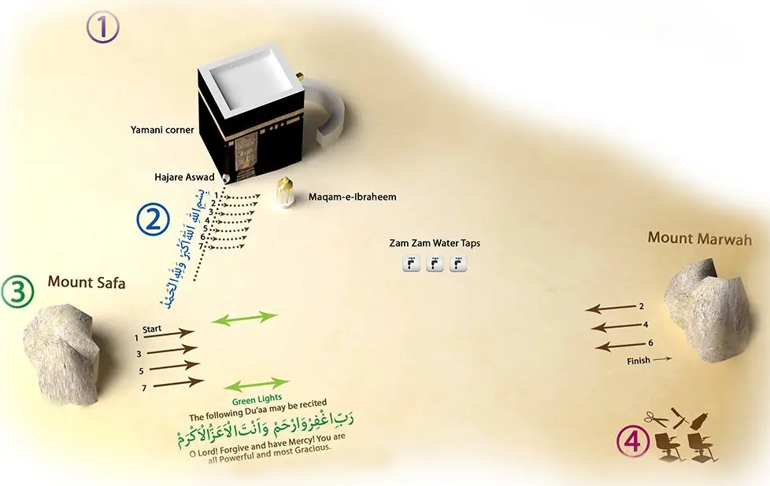

Vad är vallfärden inom Islam?
Vallfärden till Mecka är en av islams fem pelare. Det är en religiös
plikt för varje muslim som har fysisk och ekonomisk möjlighet att utföra
Hajj minst en gång i livet
Utöver Hajj finns även Umrah - en mindre vallfärd som kan utföras när
som helst under året
Vad är Umrah?
Umrah är en mindre vallfärd som kan utföras när som helst under året och
består av fyra huvudelement:
- Avsikt och Ihram
- Tawaf runt Kaaba
- Sa'i mellan Safa och Marwah
- Avslut med klippning eller rakning av håret

Religiös och historisk betydelse
Hajj och Umrah symboliserar lydnad, ödmjukhet och enhet. Muslimer följer
i fotspåren av profeterna Ibrahim (Abraham), Hajar och Muhammad (frid
vare med dem).
Kaaba är den första platsen på jorden som byggdes för tillbedjan av Gud.
Vallfärden förenar miljoner muslimer oavsett språk, bakgrund och nation.
Vanliga frågor
Hur lång tid tar Hajj?
Hajj pågår i cirka 5-6 dagar, men många stannar längre i Saudiarabien
för att besöka Medina.
Är Umrah obligatoriskt?
Nej, det är frivilligt men mycket rekommenderat och belönat.